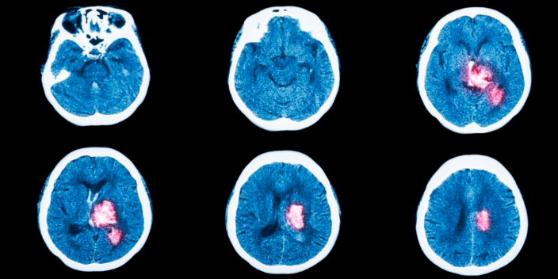

6 ознак інсульту, за яких потрібно
діяти негайно
Опубліковано 12.05.2023 Автор: Ткач Василь Анатолійович
Лікарі мають кілька годин, щоб врятувати людину. Симптоми інсульту потрібно знати всім, щоб встигнути розпізнати хворобу.

Інсульт – це порушення кровообігу мозку. Коли кров не надходить до клітин (через тромб або
розрив судини), вони гинуть. Через це людина втрачає здібності: рухатись, говорити,
бачити, дихати.
Інсульт – друга (після ішемічної хвороби серця) причина смертності в Україні. П'ята частина
хворих після інсульту стає важкими інвалідами. Але багато наслідків можна запобігти, якщо
вчасно викликати лікаря.
Перші 3–6 годин після інсульту — це «терапевтичне вікно» — час, коли медична
допомога найбільш ефективна.
Іноді людина не відразу помічає, що з нею щось не так, або думає, що нездужання пройде
саме. Через це втрачається дорогоцінний час. Тому важливо знати, як виглядає
інсульт і що при ньому робити.
Основні ознаки інсульту
-
1. Несподівано і сильно починає боліти голова.
2. Людина втрачає свідомість.
3. Порушується рівновага, хода стає нетвердою.
4. Нема частина тіла з одного боку, наприклад половина обличчя.
5. Виникають проблеми з промовою: важко вимовляти слова.
6. Втрачається зір в одному оці або відразу в обох.
Інфаркт, інсульт, ниркова недостатність, сліпота – це попередники гіпертонії.
І є тільки один спосіб уникнути серйозних ускладнень - стежити за рівнем АТ за допомогою -
Електронного тонометра, так як вони є максимально точними.
Гіпертонікам необхідний домашній вимірювач артеріального тиску, щоб запобігти ризику можливих ускладнень. Дуже важливо вимірювати артеріальний тиск у спокійній обстановці для отримання найбільш точних даних.
Як точно зрозуміти, що це інсульт
Попросіть людину виконати кілька простих дій:
Усміхнутися. Якщо людина не може посміхнутися або посмішка виходить односторонньою
(а раніше такого не було), бийте на сполох
Заговорити. Попросіть людину повторити просту пропозицію або розповісти вірш.
Після інсульту порушується артикуляція, мова стає невиразною
Висунути язик. Якщо людина не може це зробити, якщо мова мимоволі ухиляється в один
бік або виглядає скособоченим, це інсульт
Підняти рівномірно дві руки. При інсульті людина не зможе однаково добре керувати
обома руками
Підняти руки перед собою та заплющити очі. Якщо одна рука мимоволі знижується,
це ознака інсульту
Написати СМС. Дослідники з лікарні Генрі Форда помітили, що пацієнти, які не мають інших
ознак інсульту, не можуть надрукувати зв'язне повідомлення: пишуть безглуздий набір слів,
не помічаючи цього
Якщо людина не впоралася хоча б із одним із завдань, цього достатньо, щоб негайно діяти
Що робити, якщо у людини інсульт
Для початку викличте швидку. Обов'язково опишіть, чому ви підозрюєте інсульт: різко почався
головний біль, людина знепритомніла або рівновага. Розкажіть, що може зробити пацієнт:
неспроможна посміхнутися, неспроможна підняти дві руки, не вимовляє слова
При інсульті якнайшвидше потрібна допомога професіоналів
Після виклику швидкої покладіть людину на подушки, піднесення повинно починатися від
лопаток. Забезпечте доступ свіжого повітря: відкрийте кватирку чи двері у приміщенні,
розстебніть тісний одяг
Не давайте воду та їжу, тому що функції органів можуть бути порушені, людині важко
буде ковтати
Якщо є електронний тонометр, виміряйте артеріальний тиск. При підвищеному дайте людині
той препарат для зниження тиску, який зазвичай приймає. Якщо такої пігулки немає,
не давайте нічого